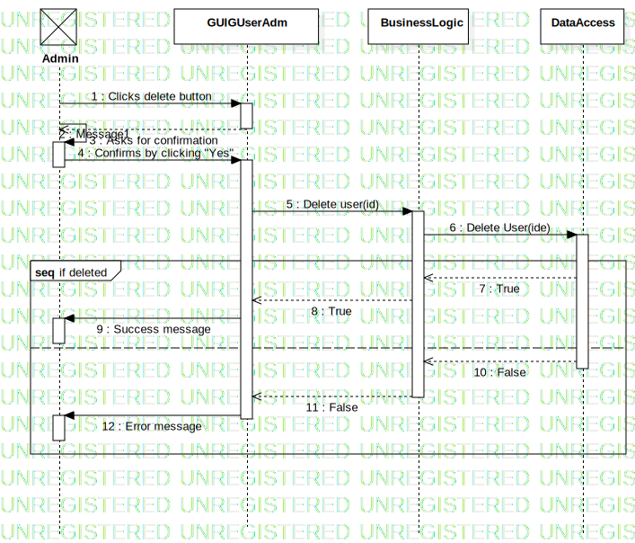

Interaction1
UMLInteraction
Bet&Ruin
::
Use Case View
::
Delete User
::
Interaction1
Description
none
Diagrams

Delete User
Fragments
if deleted
Participants
Admin
Lifeline2
GUIGUserAdm
Messages
Clicks delete button (Admin→GUIGUserAdm)
Message1 (Admin→Admin)
Asks for confirmation (GUIGUserAdm→Admin)
Confirms by clicking "Yes" (Admin→GUIGUserAdm)
Delete user (GUIGUserAdm→BusinessLogic)
Delete User (BusinessLogic→DataAccess)
True (DataAccess→BusinessLogic)
True (BusinessLogic→GUIGUserAdm)
Success message (GUIGUserAdm→Admin)
False (DataAccess→BusinessLogic)
False (BusinessLogic→GUIGUserAdm)
Error message (GUIGUserAdm→Admin)
True or False (BusinessLogic→GUIGUserAdm)
True or False (DataAccess→BusinessLogic)
Properties
Name
Value
name
Interaction1
stereotype
null
visibility
public
isReentrant
true
Owned Elements
Delete User